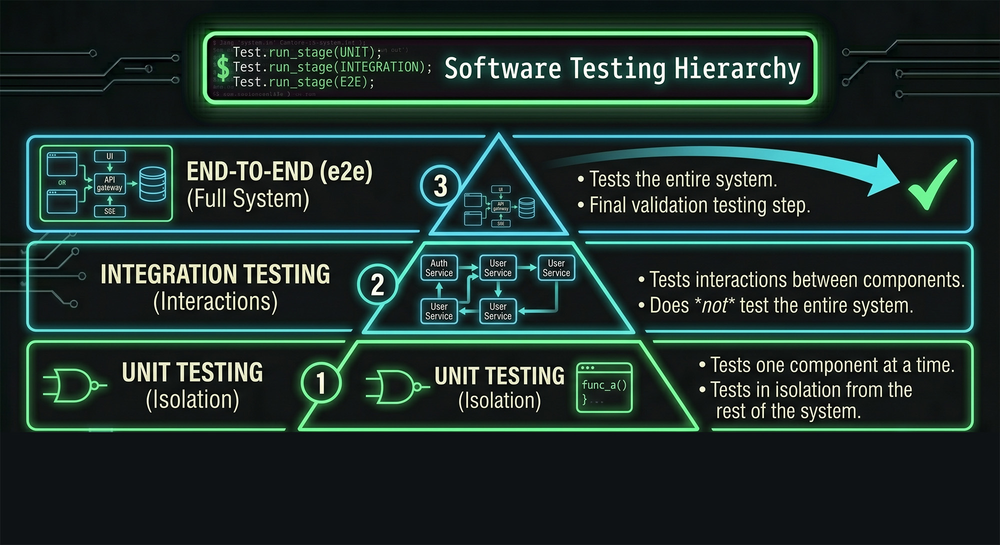
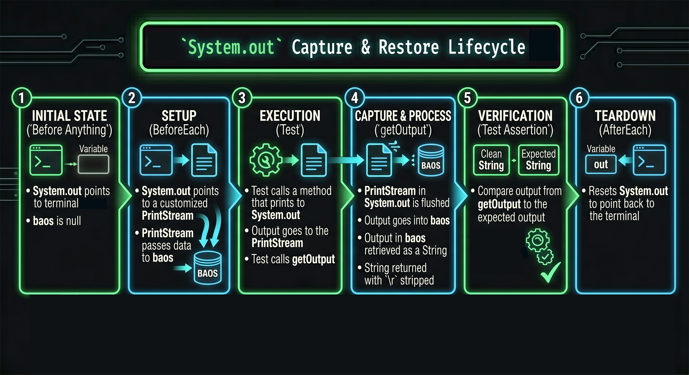
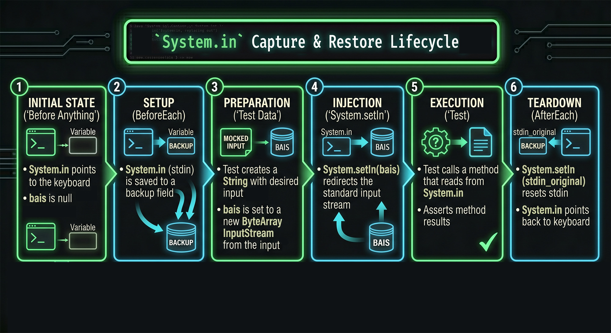

CS3667: Software Engineering
Make, Checkstyle, and JUnit
In enterprise software, we don't compile files one by one using javac in the terminal. We automate the build process.
Today we're looking at GNU Make, a classic tool that builds executables from source files.
You define 'targets', like compile or clean, and the dependencies required to build them.
We also define macros for things like our JUnit library paths to keep our scripts clean and reusable
Build Automation: Make & Makefiles
GNU Make is a tool which controls the generation of executables and other non-source files of a program from the program's source files.
It is especially useful in C and C++ which have complex builds, but we will use it for Java .
We will use Make to compile our Java projects, run Checkstyle, tests, and demos.
Lines 1-2 are macros. When used in the makefile, they are replaced with whatever is on the right side of the equals.
Line 4 is a special target that runs when "make" is run in the command line without any arguments passed to it.
Line 5 is the command that runs for the default target. @echo prints a string to the command line.
It has the TAB character before the command. Spaces do not work!
Line 7 is a normal target. It is run when typing "make compile" in the command line.
$(JUNIT_LIB) is a dependency, and an example of a macro being used.
The dependency tells the makefile we need lib/junit-platform-console-standalone-6.0.2.jar to run this command.
Line 8 is the command that runs when we run make compile.
It is the same as we would type in the command line (compiles our Java code).
(Line 2) The JFLAGS macro tells java to put our class files in the bin directory (-d is destination) and the code we are using is in the src folder.
The -cp flag (class path) tells java where other dependencies are for our program (the jar file in the JUNIT_LIB macro).
The remainder of line 8 is the path to the java file(s) that we want to compile (Demo.java in the src/mypackage directory).
Line 10 is the dependency that is not a macro. We need the .class file to run our Java program.
Line 11 is the command to run the Demo program.
(Line 2) We want the jar on our class path, but we also need bin (where our .class files are) on it. These multiple locations are separated by a colon.
mypackage/Demo is the file we are running. If it is in a package, we need to put the package name/the file name. We do not put bin since bin is not a package.
Line 13 is the clean target that removes compiled files.
Line 14 removes class files from directories in the bin directory. ** refers to any directory and *.class refers to any file with the .class extension.
Anatomy of a Makefile
JUNIT_LIB = lib/junit-platform-console-standalone-6.0.2.jar
JFLAGS = -d bin -sourcepath src
default:
@echo "this command runs if no args are given to make"
compile: $(JUNIT_LIB)
javac $(JFLAGS) -cp $(JUNIT_LIB) src/mypackage/Demo.java
run: bin/mypackage/Demo.class
java -cp bin:$(JUNIT_LIB) mypackage/Demo
clean:
rm -f ./bin/**/*.class
Reference the previous slide as a template
Try using the JFLAGS macro
Note that we are not running JUnit tests, so we don't need that macro or lib
Open VS Code on the course VM and create a make directory.
Create a simple HelloWorld.java file in a src directory.
Create a makefile in the root directory that contains three targets:
compile (compiles the Java file into a bin directory)run (executes the compiled class)clean (removes all .class files from bin)
Code is read far more often than it is written. In a team of 30 developers, if everyone formats code differently, it becomes unreadable.
Checkstyle is an automated tool that enforces a coding standard, like the Google Java Style Guide.
It runs via the command line using a JAR file and an XML configuration file.
See https://checkstyle.sourceforge.io/checks.html for more info
What is Checkstyle?
Checkstyle is a development tool to help programmers write Java code that adheres to a coding standard .
It automates the process of checking Java code.
To run Checkstyle, you need Java, a checkstyle jar file, an xml file describing the styles, and Java files to check.
Running and Configuring Checkstyle
The command to run checkstyle looks like: java -jar [path-to-jar] -c [path-to-xml] [path-to-files].
The -c flag tells checkstyle that the following argument will be the xml file from which to read checks.
Running Checkstyle
java -jar ./checkstyle-13.2.0-all.jar -c ./styles.xml src/*.java
checkstyle-13.2.0-all.jar is in the current directory and is a valid checkstyle jar file
styles.xml is in the current directory and is a valid checkstyle xml file
There is a src folder with java files in it to check
Line 1 declares version 1.0 xml file
Lines 2-4 define configuration of file as checkstyle file; DTD stands for document type declaration
Line 5 is a checkstyle module; Checker will always be first
Line 6 is a module that checks for new lines at the end of the file; all module names must be recognized by checkstyle
It has nothing inside of it, so it is closed in the same line
Line 7 is the TreeWalker module, which needs a lot of modules inside it
Line 8 begins the indentation module, which checks indentation
Line 9 is a property of its containing module; it is self-closed
The property name must be one checkstyle recognizes; it gives some extra information to the module
Properties also have values; this value tells checkstyle that the tabs should be 4 spaces long
Modules that are not self-closed must have a corresponding closing tag
Configuring Checkstyle
<?xml version="1.0"?>
<!DOCTYPE module PUBLIC
"-//Puppy Crawl//DTD Check Configuration 1.2//EN"
"http://www.puppycrawl.com/dtds/configuration_1_2.dtd">
<module name="Checker">
<module name="NewlineAtEndOfFile"/>
<module name="TreeWalker">
<module name="Indentation">
<property name="caseIndent" value="4"/>
</module>
</module>
</module>
java -jar checkstyle-13.2.0-all.jar -c styles.xml CheckstyleDemo.java
Students manually fix indentation, naming conventions, and missing Javadocs based on terminal output.
In modern enterprise environments, code with Checkstyle violations is automatically rejected by the version control system during a pull request.
Create a checkstyle directory on the course VM.
Download the provided checkstyle-13.2.0-all.jar, styles.xml and CheckstyleDemo.java.
Take the poorly formatted Java file provided in the repository, run the Checkstyle command against it via the terminal.
Work in pairs to fix every error until Checkstyle returns no output.
Unit tests are often written before writing code.
Lots of other kinds of Testing
Acceptance: Done by customer
Load: Concurrent requests, lots of data
Security: Penetration, injection
Usability: User experience
Passing tests does not mean NO bugs
How do we know when we have tested enough?
Edge/boundary cases (zero, maximum, etc.)
Consider possible user input (expected, unexpected)
Test possible branches/paths of execution

Software testing hierarchy. 3 End-to-end (Full System) tests the entire system, the final validation testing step. 2 Integration testing (interactions) tests interactions between components, does not test the entire system. 1 Unit testing (isolation) tests one component at a time, in isolation from the rest of the system.
If you are testing a class that saves to a database, you don't want your unit test actually writing to a real database.
We isolate the component using a Test Doubles, in place of the dependency.
Fakes: For example, instead of calling a database API to get a value, an in-memory database is used.
Isolating from the System
For integration / unit testing, tests need to isolate from parts of the system not being tested.
These parts of the system need to be "faked" :
Stubs: Extremely simple, use hard-coded values , with all logic removed.
Spies: "Watch" method calls to get information (how often called or arguments passed).
Mocks: A cross between a stub and a spy; can dynamically change behavior and asserts validity of method calls.
Fakes: Have a full implementation of the dependency, a simplified version of production code.
Unit Testing
We will only work on Unit Testing (no integration or e2e).
We will use JUnit for Unit Testing.
We will use stubs , but not spies, mocks, or fakes.
Test Suite: With JUnit, this is a Java class.
Test: With JUnit, this is a method with the @Test decorator.
Assertion: One of the many assertion functions provided by the JUnit Library.
Lifecycle Hooks: In JUnit, these are methods specified by certain decorators such as beforeEach or afterEach.
Unit Testing Parts
Test Suite: A collection of related tests
Test: Determines whether or not the code is working properly; contains one or more assertions
Assertion: A statement that should return true if the code is working properly and false otherwise
Lifecycle Hooks: Special points in the testing cycle during which we can insert code to run
JUnit Test Files
Regular Java classes
Regular fields and methods
Addition of some imported decorators and methods from JUnit
Class name does not matter
Method and field names do not matter
Line 1 is the import for the assertEquals function; all assert functions are static.
Line 2 is the import for the Test decorator; decoratoes are not static.
Line 3 is the import for the BeforeEach decorator used to make a lifecycle hook; BeforeEach run before every test.
Line 5 is our test suite (name of class is irrelevant).
Line 6: It is good practice to use constants for values in tests.
Line 7: Make a field for the class we are testing (MyClass).
Line 9: BeforeEach decorator specifies that the beforeEach function will run before every test.
Line 10: Method to run before each test; name is irrelevant.
Line 11 initializes test object; every class gets a fresh test object.
Line 14: Test decorator specifies the method is a JUnit test.
LIne 15 declares test method; name is irrelevant but should describe what is being tested.
Line 16 is assertion that states the return value from getName should be equal to TEST_NAME constant.
First argument (TEST_NAME) is expected value; second argument is actual value.
The MyClass constructor accepts 1 string and should store that value in a field; the getName function should return the value from that field.
import static org.junit.jupiter.api.Assertions.assertEquals;
import org.junit.jupiter.api.Test;
import org.junit.jupiter.api.BeforeEach;
public class ExampleTest {
public static final String TEST_NAME = "Tester";
private MyClass obj;
@BeforeEach
public void beforeEach() {
obj = new MyClass(TEST_NAME);
}
@Test
public void testName() {
assertEquals(TEST_NAME, obj.getName());
}
}
Full list of assertions: https://junit.org/junit5/docs/current/api/org.junit.jupiter.api/org/junit/jupiter/api/Assertions.html
Common Assert Functions
assertTrueassertFalseassertNullassertNotNullassertThrowsassertNotEquals
We almost always want to use BeforeEach hook (e.g. creating testing variables)
AfterEach (e.g. resetting System.out if it was redirected)
Lifecycle Hooks
BeforeEach Runs before each test
Use to set up the testing environment
Ensures a clean environment from test-to-test
Tests should not interfere with each other
AfterEach Runs after each test
Use to reset changes a test may have made
Can be done in BeforeEach, the choice of where to put code is semantic
BeforeAll (e.g. setting up database connection)
AFterAll (e.g. closing database connection)
Lifecycle Hooks
BeforeAll Runs once, before any test
Use to set things needed by all tests, but cannot change from test-to-test
AfterAll Runs once, after all tests
Run to clean up the environment when testing is over
Running JUnit
java -jar ./junit-platform-console-standalone-6.0.2.jar execute -cp . --scan-classpath
junit-platform-console-standalone-6.0.2.jar is in the current directory and is a valid junit jar file
execute is the command to find and execute tests (@Test decorator)-cp declares the class path as the current directory (where test classes are)--scan-classpath is a flag to scan through class path and look for all tests to run
Use previous slides for examples and command for running the test.
java -jar junit-platform-console-standalone-6.0.2.jar execute -cp . --scan-classpath
On the course VM, create a junit directory.
Create a simple Calculator.java class with an add(int a, int b) method.
Write a JUnit 5 test class named CalculatorTest.java.
Implement a @BeforeEach method to instantiate the Calculator, and write two @Test methods using assertEquals to verify the addition logic.
First argument to assertEquals is expected value; second argument is actual value.
Run the tests and verify they both pass.
Testing standard output is tricky because JUnit runs in the background. It can't 'see' the console.
To test System.out.print, we have to hijack the output stream before the test runs, divert it into an array of bytes in memory, read that array, and then put the stream back to normal in @AfterEach so we don't break the rest of the application.
Redirecting System.out
out is a static PrintStream field in the System class.It can be changed using the static setOut method of System.
For some tests, we want to check that the program prints something to the terminal (System.out).
Tests do not have access to the terminal window.
Need to redirect System.out so that print statements send the data elsewhere.
Redirecting System.out Steps
Create a PrintStream field to store the original System.out
Create a ByteArrayOutputStream field to store the new location to receive the output
In BeforeEach
Set the PrintStream field to System.out
Set the ByteArrayOutputStream field to a new one
Run System.setOut(new PrintStream(baos)) where baos is your ByteArrayOutputStream field
In AfterEach
Run System.setOut(oldOut) where oldOut is the field that you stored the original System.out
Line 3: import for our new output location
Line 4: import to save original System.out
Redirecting System.out Example
package mysystem;
import static org.junit.jupiter.api.Assertions.assertEquals;
import java.io.ByteArrayOutputStream;
import java.io.PrintStream;
import org.junit.jupiter.api.Test;
import org.junit.jupiter.api.AfterEach;
import org.junit.jupiter.api.BeforeEach;
Line 2: field for class we are testing
Line 3: field to store the new output location
Line 4: field to store the original System.out
Redirecting System.out Example
public class TestExample {
private ClassToTest obj;
private ByteArrayOutputStream baos;
private PrintStream oldOut;
Line 2: runs before every test
Line 3: save the original System.out
Line 4: create our new output location
Line 5: set System.out to the new location
Line 6: initialize our test field
Line 9: runs after every test
Line 10: reset System.out to the original location
Redirecting System.out Example
@BeforeEach
public void beforeEach() {
this.oldOut = System.out;
this.baos = new ByteArrayOutputStream();
System.setOut(new PrintStream(baos));
this.obj = new ClassToTest();
}
@AfterEach
public void afterEach() {
System.setOut(oldOut);
}
Line 2: our test function
Line 3: call the method that prints
Line 4: assert that the expected output is equal to the actual output
Line 6: helper method used to get the printed output
Line 7: flush all data from the PrintStream into our ByteArrayOutputStream
Line 8: return the output with return characters stripped.
Stripping return characters ensure the test works on mac, unix, and windows.
Redirecting System.out Example
@Test
public void someTest() {
obj.printMe();
assertEquals("expected", getOutput());
}
private String getOutput() {
System.out.flush();
return baos.toString().replaceAll("\r", "");
}

System.out Capture & Restore Lifecycle. Initial state Before Anything: System.out points to the terminal, baos is null. Setup BeforeEach: System.out points to a customized PrintStream that passes data to baos. Execution Test: Test calls method that prints to System.out, output goes to the PrintStream stored in System.out, Test calls getOutput. Capture & Process getOutput: PrintStream in System.out is flushed, output goes into baos, output in baos is retrieved as a String, returned to test with \r characters stripped. Verification Test Assertion: Clean string and expected string, compare output from getOutput to the expected output teardown afterEach: Resets System.out to point back to the terminal.
Similarly, to test a Scanner that reads from System.in, we can't pause the automated test to type on the keyboard.
We simulate keyboard inputs by converting a String with newline characters into an InputStream.
The code thinks a user is typing really fast, but it's just reading bytes from memory.
Redirecting System.in
in is a static InputStream field in the System class.It can be changed using the static setIn method of System.
For some tests, we need to provide input from the keyboard.
Tests do not have access to the keyboard.
Need to redirect System.in so that when the program tries to read from the keyboard, it reads from something we provide instead.
Redirecting System.in Steps
Create an InputStream field to store the original System.in
Create a ByteArrayInputStream field to use for new input
In BeforeEach: Set the InputStream field to System.in
In Tests
Create a String with the input you want to provide
Set the ByteArrayInputStream field to a new one, passing the bytes of the input string to the constructor
Run System.setIn(bais) where bais is the ByteArrayInputStream field
In AfterEach: Run System.setIn(oldIn) where oldOut is the field that you stored the original System.out
Line 3: import for new input location
Line 4: import to save original input location
Redirecting System.in Example
package mysystem;
import static org.junit.jupiter.api.Assertions.assertEquals;
import java.io.ByteArrayInputStream;
import java.io.InputStream;
import org.junit.jupiter.api.Test;
import org.junit.jupiter.api.AfterEach;
import org.junit.jupiter.api.BeforeEach;
Line 2: field to store object we are testing
Line 3: field to store original input location
Line 4: field to store new input location
Redirecting System.in Example
public class TestInExample {
private ClassToTest obj;
private InputStream oldIn;
private ByteArrayInputStream bais;
Line 2: runs before every test
Line 3: initialize object we are testing
Line 4: save original System.in
Note that we are not initializing the new input. That is done in the tests. This is because each test will require different input.
Line 7: runs after every test
Line 8: resets System.in to the keyboard
Redirecting System.in Example
@BeforeEach
public void beforeEach() {
this.obj = new ClassToTest();
this.oldIn = System.in;
}
@AfterEach
public void afterEach() {
System.setIn(oldIn);
}
Line 2: Our test function
Line 3: String to use as input. This string is equivalent to the user entering two numbers
Line 4: Create our input stream
Line 5: Set System.in to our input
Line 6: Call the method that reads from System.in
Line 7: Make an assertion about the results
Redirecting System.in Example
@Test
public void someTest() {
final String ourInput = "1\n5\n";
bais = new ByteArrayInputStream(ourInput.getBytes());
System.setIn(bais);
int sum = obj.addNumsFromUser();
assertEquals(6, sum);
}

System.in Capture & Restore Lifecycle. Initial State Before Anything System.in points to the keyboard, bais is null. Setup BeforeEach System.in is saved to a field. Preparation Test creates a string with the desired input, sets bais to a new ByteArrayInputStream which is passed the bytes of the input String. Injection System.setIn redirects the standard input stream. Excution Test calls method that reads from the System.in, asserts something about the results. Teardown AfterEach System.setIn resets System.in to point back to the keyboard
Makefiles are great, but managing hundreds of external JAR files manually is a nightmare.
Gradle solves this by combining build automation with dependency management.
Instead of writing bash commands like in Make, we write scripts in Groovy or Kotlin.
Gradle evaluates your script, builds a dependency graph of all the tasks, and executes them in the most efficient order possible.
The Evolution of Build Tools
While Make is powerful, Java enterprise applications require dependency resolution and convention-over-configuration .
Gradle is a modern build automation tool that uses a Groovy or Kotlin Domain Specific Language (DSL).
A build.gradle file defines the project's plugins, repositories, dependencies, and custom tasks.
Gradle uses a Directed Acyclic Graph (DAG) to determine the exact order tasks must execute.
gradlew (Mac/Linux), gradlew.bat (Windows): These are what you actually run (./gradlew). Never requires Gradle to be installed on the machine (gradle).
gradle-wrapper.properties: Ensures every developer and the autograder use the exact same version.
Project Structure
build.gradle.kts Build script for the project.settings.gradle.kts Sets the project name.gradlew / gradlew.bat Gradle Wrapper scripts (run as ./gradlew, not gradle).gradle/wrapper/gradle-wrapper.jar Executable that powers ./gradlew.gradle/wrapper/gradle-wrapper.properties Specifies Gradle version the wrapper downloads and uses.
Project Structure
config/checkstyle/styles.xml Checkstyle rule configuration.src/main/java/calculator/Calculator.java Production source code.src/test/java/calculator/CalculatorTest.java JUnit 5 test suite.
The build file we will be using is a simplified version of what is generated with gradle init (to make it easier for us to learn how to use gradle).
We are using the newer, default Kotlin version.
The build file we are using is just a basic example for building, linting, and testing our Java code; there are many more options and features that can be implemented.
Plugins declare the build capabilities the project needs.
java: enables compiling, testing and packaging Java source code
checkstyle: enables rule enforcement against Java files
Repositories tell Gradle where to download dependencies from.
Maven Central is the largest public Java package registry.
All JUnit libraries will be resolved from here automatically.
The Java toolchain is part of the project configuration.
It pins the Java version for the entire project.
This configuraton guarantees every developer compiles with the same JDK.
The Gradle build File
plugins {
java
checkstyle
}
repositories {
mavenCentral()
}
java {
toolchain {
languageVersion = JavaLanguageVersion.of(17)
}
}
The dependencies declare the libraries the project needs and when it needs them.
Gradle connects to Maven Central, downloads the JUnit JAR and any JARs that that JAR needs, and adds them all to your classpath automatically.
platform(bom) imports a Bill of Materials that aligns all JUnit module versions automatically.
testImplementation is available when compiling and running tests, not in production code.
testRuntimeOnly is only needed at runtime, not at compile time.
The task configuration tells Gradle how to run your tests.
useJUnitPlatform() activates the JUnit 5 test engine.
The Gradle build File
dependencies {
testImplementation(platform("org.junit:junit-bom:5.10.2"))
testImplementation("org.junit.jupiter:junit-jupiter")
testRuntimeOnly("org.junit.platform:junit-platform-launcher")
}
tasks.test {
useJUnitPlatform()
}
The checkstyle configuration tells Gradle how to enforce your styles.
toolVersion pins a specific Checkstyle version for consistency.
configFile points to your rule set; this is where your styles are defined.
isIgnoreFailures = false means style violations fail the build, they are not optional (necessary for CI/CD pipelines).
The checkstyle reports control the format of the Checkstyle output.
Disables XML reports which are machine-readable, better for CI/CD pipelines.
Enables HTML reports which are easier for humans to read.
The Report location: build/reports/checkstyle/main.html
The Gradle build File
checkstyle {
toolVersion = "10.17.0"
configFile = file("config/checkstyle/styles.xml")
isIgnoreFailures = false
}
tasks.withType<Checkstyle>().configureEach {
reports {
xml.required = false
html.required = true
}
}
Gradle Commands
./gradlew help Confirms the Gradle wrapper is working and shows basic usage../gradlew tasks Lists every task available in the project, grouped by category../gradlew classes Compiles only the production source code in src/main/java/../gradlew testClasses Compiles both production code and test code in src/test/java/.
test: Implicitly runs classes and testClasses first
Executes every method annotated with @Test
Prints pass/fail summary to the terminal, full report at: build/reports/tests/test/index.html
clean: Gradle is aggressive about caching — if nothing has changed, it skips tasks entirely and reports UP-TO-DATE
Occasionally the cache gets stale, or you want to verify a completely fresh build
build: Compiles production code and test code, runs Checkstyle, runs all tests, fails if any step fails
Gradle Commands
./gradlew check Runs all verification tasks, including Checkstyle../gradlew test Compiles everything and runs the full JUnit test suite../gradlew clean Deletes the entire build/ directory../gradlew build Runs the complete build pipeline in one command.
Begin work on the Gradle Assignment in the Canvas course.